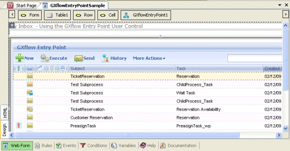
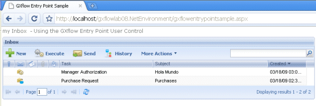

Control DescriptionThis user control is used to embed any of the GXflow components within the generated applications. To Install ItUnzip the GXflowEntryPoint.zip file in the UserControls folder. Execute GeneXus with /install and then open GeneXus. Note: You can find the zip here: <GeneXusX>\Packages\GXPM\Extra, where <GeneXusX> is the genexus installation folder. The UserControls folder is in the GeneXus installation folder. Using the controlTo use the GXflow Entry Point control you must drop the control from the toolbox to a Web Panel and you will get:  In order to use the control change at least the following properties:
&Session.Set('WorkflowUser','<Workflow_User>') Then, when executing your WebPage using the control, you should get the GXflow component within your application:  Control Properties
Notes
Troubleshooting: If loading an XPZ fails with "error: User control 'GXflowEntryPoint' is used by some object(s) but is not installed in this GeneXus instance. Please install it and retry." install this User Control. (keyword: gxflowentrypoint )
|
| Backlinks | |
| Category:Common Controls | Toc:GeneXus BPM Suite |